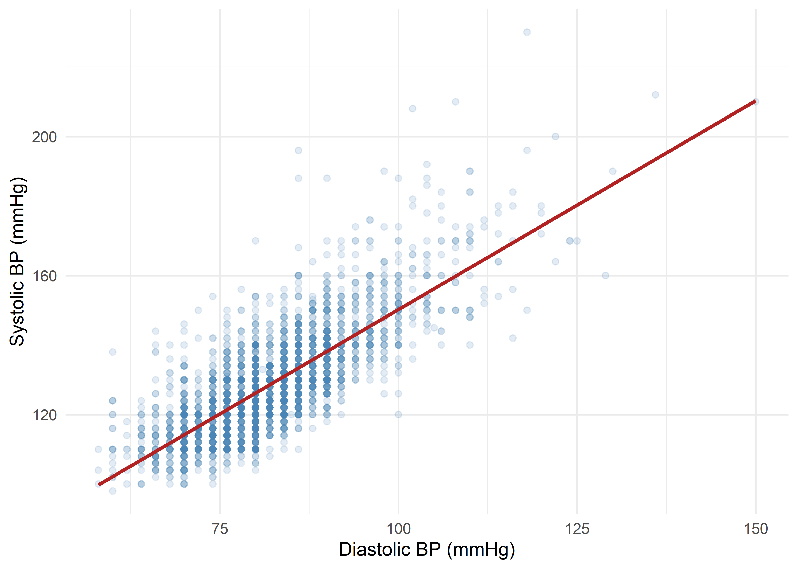
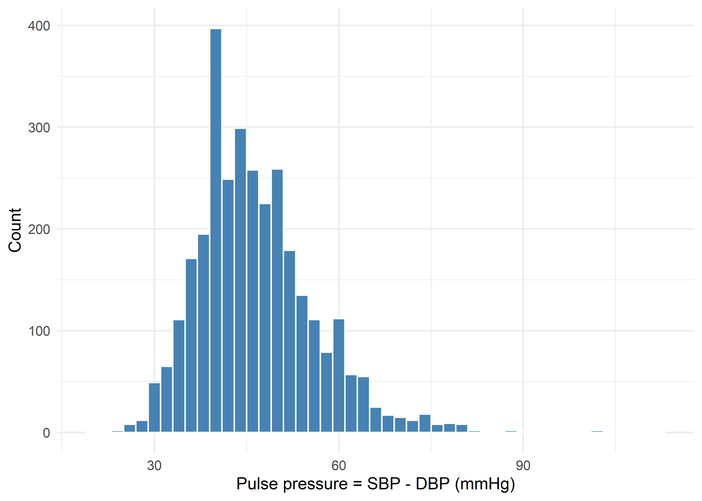
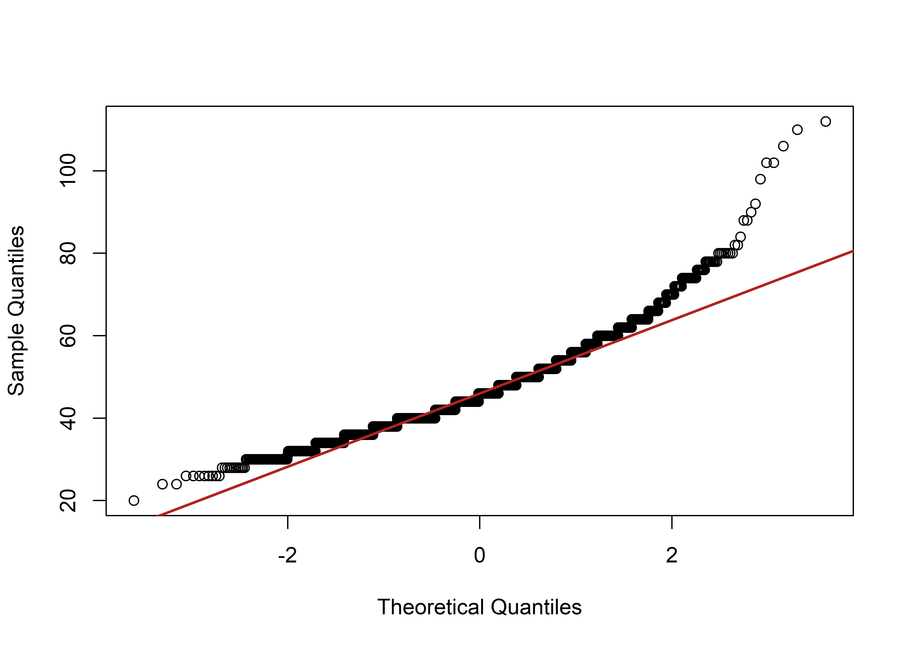

By the end of this chapter, you should be able to:
Recognise a paired (matched) design — where two measurements are linked because they come from the same subject (or a matched pair) — and explain why this is different from comparing two independent groups.
State the hypotheses, assumptions, formula, and correct interpretation of the paired\(t\)-test, and explain why it is mathematically identical to a one-sample \(t\)-test performed on the differences.
Calculate the paired \(t\)-test by hand, including the deviation table used to obtain the standard deviation of the differences.
State the assumptions, formula, and correct interpretation of the Wilcoxon signed-rank test as a paired/matched-samples procedure.
Calculate the Wilcoxon signed-rank statistic by hand for paired data, including handling of tied ranks.
Reproduce all procedures in R, using the WCGS data, and correctly explain why ignoring pairing (treating matched data as if it were two independent samples) produces the wrong standard error.
Comparing Two Paired (Matched) Measurements
A paired (or matched) design arises whenever two measurements are linked at the level of the individual observational unit — most commonly because the same subject contributes both values. Classic examples are “before vs. after treatment” on the same patient, or two raters scoring the same specimen. The defining statistical feature is not the timing of the measurements but the fact that the two values are correlated: knowing one tells you something about the other, because both come from the same source of between-subject variability.
The WCGS data set does not contain a longitudinal before/after design, but it does contain something equally legitimate for a paired analysis: systolic blood pressure (sbp) and diastolic blood pressure (dbp), both measured on the same man at the same clinic visit. These two numbers are far from independent — a man with an unusually high sbp for his age and build will tend to also have an unusually high dbp, because both partly reflect the same underlying vascular physiology. That within-subject correlation is precisely the situation the paired test is built to exploit, and it is worth confirming formally before proceeding:
cor.test(wcgs$sbp, wcgs$dbp)
#>
#> Pearson's product-moment correlation
#>
#> data: wcgs$sbp and wcgs$dbp
#> t = 68, df = 3152, p-value <2e-16
#> alternative hypothesis: true correlation is not equal to 0
#> 95 percent confidence interval:
#> 0.7585 0.7866
#> sample estimates:
#> cor
#> 0.7729
The correlation is strong and highly significant (\(r = 0.773\), \(95\%\) CI \(0.758\) to \(0.787\), \(p<0.001\)). Because sbp and dbp are this strongly linked within a person, a test that ignores the pairing (i.e., treats the two columns as if they came from two different, independent groups of men) throws away real information and — as we will demonstrate later in this chapter — produces the wrong standard error for the comparison.
The paired difference itself is not merely a technical device here; it is a genuine, clinically meaningful quantity:
Pulse pressure is a recognised cardiovascular measure related to arterial stiffness. Because systolic pressure is, by definition of the cardiac cycle, essentially always higher than diastolic pressure for a given person, we already know with near certainty that mean pulse pressure will be positive and that a paired test will reject \(H_0:\mu_d=0\) — that direction is a matter of physiology, not a “finding.” The genuinely useful statistical content in this chapter is therefore twofold: (a) demonstrating paired-test technique on real, honestly-paired data, and (b) estimating the size and precision of mean pulse pressure in this cohort — a legitimate epidemiological quantity — while showing exactly how the paired approach correctly accounts for the sbp/dbp correlation that an independent two-sample test would ignore.
ggplot(wcgs, aes(x = dbp, y = sbp)) +geom_point(alpha =0.15, colour ="steelblue") +geom_smooth(method ="lm", se =FALSE, colour ="firebrick") +labs(x ="Diastolic BP (mmHg)", y ="Systolic BP (mmHg)") +theme_minimal(base_size =12)

Figure 21.1: Systolic vs. diastolic blood pressure, same subject, same visit — the visible positive association is exactly why these two measurements should be analysed as a paired sample.
Two procedures are commonly used for paired data:
Test
Assumes normality?
Uses
Paired\(t\)-test
Yes, of the differences\(d_i\) (or large \(n\))
Raw differences
Wilcoxon signed-rank test
No — only (approximate) symmetry of the differences
Ranks of \(\lvert d_i\rvert\)
The Paired \(t\)-Test
Hypotheses
\[
H_0: \mu_d = 0 \qquad H_1: \mu_d \ne 0
\]
where \(\mu_d\) is the population mean of the paired differences \(d_i = x_{1i} - x_{2i}\).
Assumptions
The design is genuinely paired/matched: each \(d_i\) comes from a single subject (or matched pair) contributing both measurements.
The differences \(d_i\) are independent across subjects (subject \(j\)’s difference tells us nothing about subject \(k\)’s) — independence is required between pairs, not within a pair (within a pair, correlation is expected and is exactly what pairing accounts for).
The differences \(d_i\) are (approximately) normally distributed, or \(n\) is large enough for the Central Limit Theorem to apply to \(\bar d\). Critically, it is the distribution of the differences that must be checked — not the distributions of the two raw variables, which may each be non-normal even when their differences are well behaved (or vice versa).
Test statistic
\[
t = \frac{\bar d}{s_d/\sqrt n} \qquad \sim\; t_{(n-1)} \text{ under } H_0
\tag{22.1}\]
where \(\bar d = \frac{1}{n}\sum d_i\) and \(s_d = \sqrt{\dfrac{\sum (d_i-\bar d)^2}{n-1}}\) is the standard deviation of the differences.
Confidence interval for \(\mu_d\)
\[
\bar d \pm t_{(1-\alpha/2,\;n-1)} \cdot \frac{s_d}{\sqrt n}
\]
Connection to the one-sample \(t\)-test
Compare Equation 22.1 with the one-sample \(t\)-statistic from previous chapter, \(t=(\bar x-\mu_0)/(s/\sqrt n)\). They are exactly the same formula: the paired \(t\)-test is a one-sample \(t\)-test applied to the single derived variable \(d_i\), tested against the fixed value \(\mu_0=0\). There is no new machinery here — only a new variable to feed into the familiar one-sample procedure. This is why, in R, t.test(x1, x2, paired = TRUE) and t.test(x1 - x2, mu = 0) give identical output, as we verify below.
Manual (Hand) Calculation of the Paired \(t\)-Test
We draw a reproducible random subsample of \(n=10\) men (set.seed(444)) and compute their pulse pressure \(d = \text{sbp}-\text{dbp}\).
Random subsample (n = 10) with paired sbp, dbp, and difference d = sbp - dbp (pulse pressure)
#>
#> Paired t-test
#>
#> data: sub$sbp and sub$dbp
#> t = 19, df = 9, p-value = 1e-08
#> alternative hypothesis: true mean difference is not equal to 0
#> 95 percent confidence interval:
#> 42.61 54.19
#> sample estimates:
#> mean difference
#> 48.4
t.test(sub$d, mu =0) # identical, confirming the one-sample-on-differences equivalence
#>
#> One Sample t-test
#>
#> data: sub$d
#> t = 19, df = 9, p-value = 1e-08
#> alternative hypothesis: true mean is not equal to 0
#> 95 percent confidence interval:
#> 42.61 54.19
#> sample estimates:
#> mean of x
#> 48.4
The hand-calculated \(\bar d = 48.4\), \(s_d = 8.099\), \(t = 18.90\), \(df = 9\), \(p = 1.50\times 10^{-8}\) match R’s t.test(sub$sbp, sub$dbp, paired = TRUE) exactly, and t.test(sub$d, mu = 0) reproduces the identical output — confirming the equivalence stated above. Even in this tiny subsample, mean pulse pressure is enormous relative to its standard error (as physiology predicts), so the result is not remotely borderline.
The Wilcoxon Signed-Rank Test for Paired Data
When to use it instead of the paired \(t\)-test
The Wilcoxon signed-rank test is the nonparametric counterpart to the paired \(t\)-test (it is the same procedure introduced in previous chapter for one-sample data — applied here to the paired differences \(d_i = x_{1i}-x_{2i}\) instead of \(x_i-\mu_0\)). Prefer it when:
The differences \(d_i\) are clearly non-normal / skewed, or contain influential outliers.
The outcome is ordinal rather than a proper interval scale.
The sample size is small, so the Central Limit Theorem cannot be relied upon to rescue non-normal differences.
It requires only that the distribution of the differences be (approximately) symmetric about its centre, a much weaker assumption than normality:
Compute the differences \(d_i = x_{1i} - x_{2i}\) for each pair.
Discard any \(d_i = 0\) (exact ties between the pair), reducing \(n\) accordingly.
Rank the absolute differences \(\lvert d_i \rvert\) from smallest (rank 1) to largest, giving tied absolute differences the average of the ranks they span.
Attach back the original sign of \(d_i\) to each rank.
Sum the ranks of the positive differences (\(W^+\)) and, separately, of the negative differences (\(W^-\)); note \(W^+ + W^- = \dfrac{n(n+1)}{2}\) always.
The test statistic is (by one common textbook convention) \(W=\min(W^+,W^-)\); small values of \(W\) are evidence against \(H_0\). R instead reports \(V=W^+\) directly — equivalent information.
For larger \(n\), use the normal approximation:
\[
z = \frac{W-\mu_W}{\sigma_W}, \qquad
\mu_W=\frac{n(n+1)}{4}, \qquad
\sigma_W=\sqrt{\frac{n(n+1)(2n+1)}{24}}
\tag{24.1}\]
(software applies a downward correction to \(\sigma_W\) for tied ranks, and often a \(0.5\) continuity correction to the numerator).
Manual (Hand) Calculation of the Wilcoxon Signed-Rank Test
We reuse the same\(n=10\) paired subsample from the previous section. Notice from the deviation table that two pairs share \(\lvert d\rvert = 44\) (subjects with \(d=44,44\)) and two share \(\lvert d\rvert = 46\) (\(d=46,46\)) — genuine ties in the absolute differences, giving a useful worked example of tie handling. Also notice that every\(d_i\) is positive: as discussed above, this is expected on physiological grounds (sbp exceeds dbp for essentially every subject) and is not itself informative — the interesting content is in the ranks’ magnitudes, not their signs.
Step 1: Rank the absolute differences and reattach sign
Ranking of absolute paired differences (n = 10)
ID
d
\(\lvert d\rvert\)
Rank of \(\lvert d\rvert\)
Signed rank
12386
40
40
2.0
2.0
12457
60
60
10.0
10.0
13213
58
58
9.0
9.0
13262
46
46
5.5
5.5
10274
54
54
7.0
7.0
3075
36
36
1.0
1.0
13479
44
44
3.5
3.5
3515
44
44
3.5
3.5
11490
46
46
5.5
5.5
11200
56
56
8.0
8.0
Step 2: Sum the positive and negative signed ranks
\(W^+=55\), \(W^-=0\) — every difference is positive, so all of the rank mass falls on the positive side; the two sums correctly add to \(n(n+1)/2=55\). Using the min-statistic convention, \(W=\min(55,0)=0\).
#>
#> Wilcoxon signed rank test with continuity correction
#>
#> data: sub$sbp and sub$dbp
#> V = 55, p-value = 0.006
#> alternative hypothesis: true location shift is not equal to 0
wilcox.test(sub$sbp, sub$dbp, paired =TRUE, correct =FALSE) # matches the hand normal approximation
#>
#> Wilcoxon signed rank test
#>
#> data: sub$sbp and sub$dbp
#> V = 55, p-value = 0.005
#> alternative hypothesis: true location shift is not equal to 0
R reports \(V=55\) — exactly our \(W^+\). Without the continuity correction, \(p=0.00500\), matching our hand calculation (\(p\approx0.0051\)) closely (the tiny remaining gap is R’s additional variance correction for the tied ranks at \(3.5\) and \(5.5\)); with the continuity correction (R’s default), \(p=0.00586\). Both are far below \(0.05\), and both agree with the paired \(t\)-test: pulse pressure is significantly different from zero even in this \(n=10\) subsample — again, an expected physiological result, with the genuinely interesting information residing in the size of the effect rather than its direction.
Demonstration in R Using the Full WCGS Data Set
Distribution of pulse pressure and checking the actual assumption (normality of the differences)
The assumption that matters for the paired \(t\)-test is normality of \(d_i = \text{sbp}_i-\text{dbp}_i\) — not normality of sbp or dbp individually.
wcgs$pulse_pressure <- wcgs$sbp - wcgs$dbpggplot(wcgs, aes(x = pulse_pressure)) +geom_histogram(binwidth =2, fill ="steelblue", colour ="white") +labs(x ="Pulse pressure = SBP - DBP (mmHg)", y ="Count") +theme_minimal(base_size =12)qqnorm(wcgs$pulse_pressure, main ="")qqline(wcgs$pulse_pressure, col ="firebrick", lwd =2)

(a) Histogram of pulse pressure

(b) Normal Q-Q plot of pulse pressure
Figure 26.1: Distribution of pulse pressure (sbp - dbp) in the full WCGS cohort (n = 3,154).
shapiro.test(wcgs$pulse_pressure)
#>
#> Shapiro-Wilk normality test
#>
#> data: wcgs$pulse_pressure
#> W = 0.94, p-value <2e-16
The histogram is unimodal and reasonably symmetric with a slight right skew, and the Q-Q plot shows only modest departure from the reference line in the tails. Shapiro-Wilk nonetheless rejects exact normality (\(p<0.001\)) — but with \(n=3{,}154\), Shapiro-Wilk is well known to detect even trivially small deviations from normality as “significant” (a large-\(n\) oversensitivity we have flagged in previous chapters). Combined with \(n\) being very large (so the Central Limit Theorem applies comfortably to \(\bar d\) regardless of the shape of individual differences) and the mild skew visible in the plots, the paired \(t\)-test remains entirely appropriate here; we run the Wilcoxon test alongside it as a robustness check.
Paired \(t\)-test on the full sample
t.test(wcgs$sbp, wcgs$dbp, paired =TRUE)
#>
#> Paired t-test
#>
#> data: wcgs$sbp and wcgs$dbp
#> t = 267, df = 3153, p-value <2e-16
#> alternative hypothesis: true mean difference is not equal to 0
#> 95 percent confidence interval:
#> 46.28 46.96
#> sample estimates:
#> mean difference
#> 46.62
Mean pulse pressure is \(46.62\) mmHg (\(95\%\) CI \(46.28\) to \(46.96\)), \(t(3153)=267.4\), \(p<0.001\). With \(n=3{,}154\), this huge \(t\)-statistic is not remarkable in itself (the direction was guaranteed); what is useful is the tight confidence interval — we can state mean pulse pressure in this cohort to within about \(\pm0.34\) mmHg.
#>
#> Wilcoxon signed rank test with continuity correction
#>
#> data: wcgs$sbp and wcgs$dbp
#> V = 5e+06, p-value <2e-16
#> alternative hypothesis: true location shift is not equal to 0
#> 95 percent confidence interval:
#> 46 46
#> sample estimates:
#> (pseudo)median
#> 46
The Wilcoxon test gives an estimated (pseudo)median difference (the Hodges-Lehmann estimator) of \(46.0\) mmHg, \(95\%\) CI \((46.00, 46.00)\) — reported to more decimal places by R as \(45.99997\) to \(46.00004\), i.e. an extremely tight interval given the huge \(n\) — and \(p<0.001\). The \(t\)-test mean (\(46.62\)) and the Wilcoxon pseudomedian (\(46.0\)) are close but not identical, consistent with the mild right skew seen in the histogram; both procedures agree emphatically on the substantive conclusion.
What goes wrong if pairing is ignored
Suppose, mistakenly, that sbp and dbp were treated as two independent samples rather than paired measurements on the same men (i.e., an (incorrect) unpaired/Welch two-sample test):
#>
#> Welch Two Sample t-test
#>
#> data: wcgs$sbp and wcgs$dbp
#> t = 146, df = 5382, p-value <2e-16
#> alternative hypothesis: true difference in means is not equal to 0
#> 95 percent confidence interval:
#> 45.99 47.24
#> sample estimates:
#> mean of x mean of y
#> 128.63 82.02
The point estimate of the mean difference is unchanged (\(46.62\) mmHg either way, since both are just \(\bar{\text{sbp}}-\bar{\text{dbp}}\)), but the standard error nearly doubles when the (incorrect) independent-samples approach is used (\(SE\approx0.320\) vs. the correct paired \(SE\approx0.174\)), and correspondingly the (incorrect) \(t\)-statistic drops from \(267.4\) to \(145.6\) and the confidence interval widens. This is exactly the cost of throwing away the strong positive within-subject correlation (\(r=0.773\)) confirmed at the start of the chapter: the independent-samples formula assumes zero correlation between the two sets of values and so overstates the combined uncertainty. In general, whenever two measurements are legitimately paired, using an independent-samples test does not just lose power — it computes the wrong standard error for the design that was actually used to collect the data.
Comparison table
tt <-t.test(wcgs$sbp, wcgs$dbp, paired =TRUE)wt <-wilcox.test(wcgs$sbp, wcgs$dbp, paired =TRUE, conf.int =TRUE)results <-data.frame(Test =c("Paired t-test", "Wilcoxon signed-rank"),Estimate =c(unname(tt$estimate), unname(wt$estimate)),CI_lower =c(tt$conf.int[1], wt$conf.int[1]),CI_upper =c(tt$conf.int[2], wt$conf.int[2]),Statistic =c(unname(tt$statistic), unname(wt$statistic)),df_or_NA =c(unname(tt$parameter), NA),p_value =c(signif(tt$p.value, 3), signif(wt$p.value, 3)))kable(results, digits =3,col.names =c("Test", "Estimate (mean or pseudomedian)", "95% CI lower", "95% CI upper","Statistic (t or V)", "df", "p-value"),caption ="Paired t-test vs. Wilcoxon signed-rank test for pulse pressure (sbp - dbp), full WCGS cohort")
Table 26.1: Paired t-test vs. Wilcoxon signed-rank test for pulse pressure (sbp - dbp), full WCGS cohort
Paired t-test vs. Wilcoxon signed-rank test for pulse pressure (sbp - dbp), full WCGS cohort
Test
Estimate (mean or pseudomedian)
95% CI lower
95% CI upper
Statistic (t or V)
df
p-value
Paired t-test
46.62
46.28
46.96
267.4
3153
0
Wilcoxon signed-rank
46.00
46.00
46.00
4975435.0
NA
0
A Practical Decision Process
Confirm the design is genuinely paired/matched (same subject or matched unit contributes both values) — if not, use the independent-groups methods of the previous chapter instead.
Compute the differences \(d_i\) and check their distribution (histogram, Q-Q plot; Shapiro-Wilk interpreted cautiously in large samples) — not the distributions of the two raw variables.
Choose accordingly:
Differences approximately normal (or large \(n\))?
Recommended test
Yes
Paired \(t\)-test
No (skewed, outlier-prone, ordinal, or small \(n\) with clear non-normality)
Wilcoxon signed-rank test
Report the estimate and confidence interval (mean difference or pseudomedian), not just the \(p\)-value — especially important in a paired design where a large \(n\) can make even a small, physiologically uninteresting difference “significant.”
Common Pitfalls
Mistaking a paired design for an independent one. As shown above, running an (incorrect) independent two-sample test on data that is actually paired ignores the within-subject correlation and produces the wrong (here, nearly doubled) standard error — it does not just cost power, it computes the wrong quantity for the design used.
Checking normality of the raw variables instead of the differences. The paired \(t\)-test’s normality assumption applies to \(d_i=x_{1i}-x_{2i}\), not to sbp or dbp individually; a variable can be skewed on its own while its paired differences with another correlated variable are well behaved, or vice versa.
Forgetting to drop or correctly handle zero differences and ties in the Wilcoxon test. Exact zero differences (\(d_i=0\)) must be removed and \(n\) reduced accordingly; tied \(\lvert d_i\rvert\) values must receive averaged ranks, and software applies a variance correction for ties that a naive hand calculation may omit.
Over-interpreting a physiologically (or logically) guaranteed direction as a “finding.” Because SBP essentially always exceeds DBP within a person, obtaining \(p<0.001\) for \(H_0:\mu_d=0\) tells us nothing we didn’t already know — the informative output of this analysis is the size and precision of mean pulse pressure (\(46.6\) mmHg, tight CI), not its sign.
Confusing statistical and clinical/physiological significance. With \(n=3{,}154\), the confidence interval for mean pulse pressure is extremely tight; always report and interpret the magnitude and CI, not only whether \(p<0.05\).
Summary
A paired (matched) design links two measurements at the level of the individual subject; the WCGS sbp and dbp values, measured on the same man at the same visit, are strongly correlated (\(r=0.773\)) and constitute a legitimate paired sample, even though the study was not a before/after design.
The paired\(t\)-test tests \(H_0:\mu_d=0\) on the differences \(d_i=x_{1i}-x_{2i}\) and is mathematically identical to a one-sample \(t\)-test applied to those differences (\(t=\bar d/(s_d/\sqrt n)\)); on our \(n=10\) hand-calculation subsample, \(t=18.90\), \(df=9\), \(p=1.50\times10^{-8}\), matching R exactly.
The Wilcoxon signed-rank test is the nonparametric counterpart, requiring only symmetry of the differences; in the same subsample, \(W^+=55\), \(W^-=0\), normal-approximation \(z=-2.80\), \(p\approx0.0051\), closely matching R’s uncorrected result (\(p=0.00500\)).
On the full cohort (\(n=3{,}154\)), mean pulse pressure is \(46.62\) mmHg (\(95\%\) CI \(46.28\) to \(46.96\); Wilcoxon pseudomedian \(46.0\) mmHg) — a precise, clinically interpretable estimate.
Treating sbp and dbp as independent rather than paired nearly doubles the standard error (\(0.320\) vs. \(0.174\)) for the identical point estimate, illustrating concretely why pairing must be respected in the analysis whenever it is present in the data-collection design.
References
Rosner B. Fundamentals of Biostatistics. 8th ed. Cengage Learning.
Daniel WW, Cross CL. Biostatistics: A Foundation for Analysis in the Health Sciences. 11th ed. Wiley.
Bland M. An Introduction to Medical Statistics. 4th ed. Oxford University Press.
Wilcoxon F. “Individual Comparisons by Ranking Methods.” Biometrics Bulletin. 1945;1(6):80-83.
Rosenman RH, et al. “A predictive study of coronary heart disease: the Western Collaborative Group Study.” JAMA. 1964;189:15-22. (Original WCGS study.)